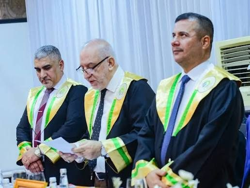

The College of Agriculture at the University of Wasit was established following the Ministry of Higher Education and Scientific Research's approval of 15 May 2008, as one of the scientific colleges serving the agricultural and livestock sector in Wasit Governorate and central Iraq.
This paragraph summarizes the confirmed facts from the live site. The full "Historical Overview" text published there is longer and needs review and an update from the College's administration before being adopted here in final form.
The College comprises a Dean's Office and College Council, five scientific departments (Food Science; Soil Science and Water Resources; Medicinal Plants and Health Nutrition; Plant Protection; Animal Production), and administrative divisions covering registration and student affairs, graduate studies, quality assurance, scientific affairs, media, computing and internet, the central library, and maintenance.

The live site currently has two laboratory-guide links, one of which is broken (404). This will be replaced with a single unified link once the correct file is provided.